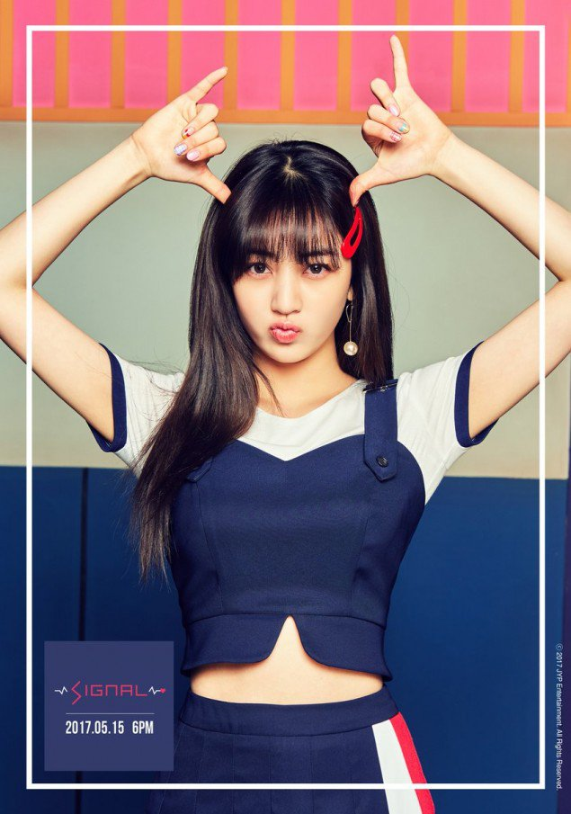

J I H Y O

Stage Name: Jihyo
Birth Name: Park Ji Soo (박지수) / legalized name Park Ji Hyo (박지효)
Nationality: Korean
Position: Leader, Main Vocalist
Birthday: February 1, 1997
Zodiac sign: Aquarius
Official Height: 162 cm ( 5 ft 3¾ in) /Approx. Real Height: 160 cm (5’3″)*
Official Weight: 56 kg (123 lbs) / Approx. Real Weight: 49 kg (108 lbs)
Blood Type: O
Jihyo facts:
She was born in Guri, Gyeonggi-do, South Korea.
She became a JYP trainee when she was a third grader, after she won the 2nd place in a contest on Junior Naver for a child role.
She is the Twice member who trained the most. She trained for 10 years.
She trained with WG, 2pm, 2am, Miss-A, Got7 and literally everyone in JYP knows her.
She was voted leader by the members and not JYP himself (by anonymous voting).
Jihyo’s real name is Park Jisoo. She legalized her name to Park Jihyo right before Sixteen.
Jihyo’s favorite color is red.
Jihyo cannot eat raw foods.
She likes yogurt smoothies, chicken and meat, but she hates broccoli.
Jihyo’s hobbies are web-surfing and reading webtoons.
She really enjoyed the webtoon “Appearance Supremacy”.
When she can’t sleep, she listens to classical music or surfs the web on her phone.
When she’s stressed she like to go to karaoke.
She said she often checks Twitter.
Jihyo is ambidextrous. (Twice Showtime)
She appeared in miss A’s “Only You” MV
She likes hanging out with her friends.
Her favorite music is R&B Soul.
When they first saw her, Jungyeon thought she was Indonesian and Nayeon thought she looked exotic.
Jihyo has a pineapple allergy, if she eats it, her throat gets itchy.
Jihyo said she wants to sing a duet with senior artist Im Chang Jung.
The Twice members picked Jihyo as the member who cries the most.
Among the Twice members, Jihyo is the most scared of bugs.
She lost a lot of weight for their “Signal” comeback.
Jihyo’s ideal type: “Someone who I can show my true self to; Someone I can be most comfortable with.”